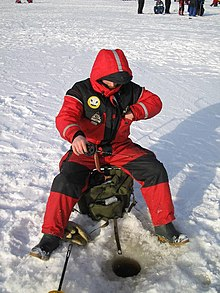
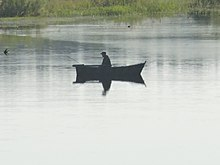

Содержание
- О происхождении слова
- Виды рыбалки
- Преимущества и недостатки принципа «поймал-отпустил»
- Виды ловли
- Виды ловли хищной рыбы
- Виды ловли мирной рыбы
- Виды ловли любой рыбы
- Причины сокращения популяций рыб и роль любительского рыболовства среди них
- Изображения
- Литература
О происхождении слова
В старину слово «рыбалка» означало, а в некоторых говорах (и в украинском языке) означает и сейчас не рыбную ловлю, а рыболова, рыбака. В Ярославской области исстари рыбалкой именуют чайку. Например, в стихотворении Некрасова «На Волге» есть строки:
Уж скоро полдень. Жар такой, Что на песке горят следы, Рыбалки дремлют над водой, Усевшись в плотные ряды…
Виды рыбалки
Зимняя рыбалка Рыбак в лодке на реке Различают рыбалку: по времени года: летняя, зимняя; по месту: морская, пресноводная (речная, озёрная); с лодки, со льда, на подводной охоте, с берега, с заходом в воду (на горных реках); по используемым снастям: поплавочная (в том числе бомбарда, или сбирули́но), донная (в том числе фидерная, методная ловля), спиннинговая, на́хлыст, с помощью жерлицы, остроги (запрещено законодательством), лука (стрельба по рыбе из лука), чекмаря; с изъятием рыбы из среды обитания или с возвратом в водоём по принципу «поймал-отпустил»; по объекту лова: карась, язь, сазан, судак, щука, ленок, сиг, лещ, пескарь, уклейка, сибирский таймень, байкальский омуль, лососёвые, сом, хариус, то есть хищные, полухищные, травоядные (нехищные) виды и т. д. Последнее различие из указанных является основным: ловля мирной (белой) рыбы или ловля хищной рыбы. Для хранения и переноса выловленной рыбы используют кукан, садок. Для удобного вываживания рыбы из воды применяют подсачек.
Преимущества и недостатки принципа «поймал-отпустил»
К преимуществам отпускания пойманной рыбы можно отнести то, что часть отпущенной рыбы выживает, уменьшая депопуляцию. Но это происходит лишь при соблюдении норм вылова, в то время как не ограниченный нормативами лов с последующим отпусканием может нанести популяции больший ущерб, в сравнении с изъятием из водоёма рассчитанной ихтиологами допустимой нормы вылова. К недостаткам неограниченного лова по принципу «поймал-отпустил» можно отнести различные виды травмирования особей в процессе лова и при содержании в садке: обморожения при ловле в мороз со льда, повреждения ротовой полости и жабр, чешуи и плавников, внутренних органов вследствие баротравмы, тепловые ожоги холоднокровных при непосредственном контакте с руками рыболова, что может привести (в зависимости от вида) к болезни или гибели особи. В некоторых странах (Германия, Швейцария и т. д.) по ихтиологическим и морально-этическим причинам использование принципа «поймал-отпустил» находится под законодательным запретом.
Виды ловли
Виды ловли хищной рыбы
- Спиннинг — ловля хищной рыбы на движущуюся натуральную (снасточка) или искусственную приманку (блёсны, воблеры, джиговые приманки). В качестве рыболовной снасти используются специальное спиннинговое удилище с большим количеством пропускных колец для выполнения дальнего заброса приманки и спиннинговая катушка, мультипликаторная или безынерционная.
- Троллинг — проводка приманки за движущейся лодкой. В качестве снасти используется мощное спиннинговое удилище, чаще с мультипликаторной, реже — с безынерционной катушкой. Дорожка — подвид троллинга, когда лодка движется не мотором, а вёслами.
- Джиг — ступенчатая проводка приманки спиннингом. Обычно используется для ловли рыбы на глубинах и бровках. Как правило, это ловля окуня, судака и щуки. Разновидность спиннинговой ловли. Микроджиг — ступенчатая проводка приманки маленькой массы (1-5 г) по небольшим глубинам.
- Твичинг — ловля с помощью спиннинга, приманка ведётся рывками. В основном используются такие приманки, как воблеры, типа минноу.
Виды ловли мирной рыбы
- Фидер (англ. feeder) — английская рыболовная донная снасть, а также способ ловли рыбы этой снастью. Особенность данного способа ловли заключается в использовании специальных удилищ с квивертипами, которые выступают сигнализаторами поклевки. Фидер — снасть с кормушкой (англ. «to feed» — «кормить»), рассчитанная на ловлю со дна с постоянным прикармливанием места ловли.
- Донка — рыболовная снасть, предназначенная для ужения придонной рыбы.
- Поплавочная удочка — поплавочная удочка состоит из удилища и закреплённой на нём лески с поплавком.
Виды ловли любой рыбы
- Подлёдное глушение — зимний лов рыбы, стоящей под тонким льдом, ударом по льду деревянной колотушки; оглушенная рыба перевертывается кверху животом и вынимается через наскоро пробиваемую прорубь; лов мало добычливый и имеет более спортивный характер.
Изображения

